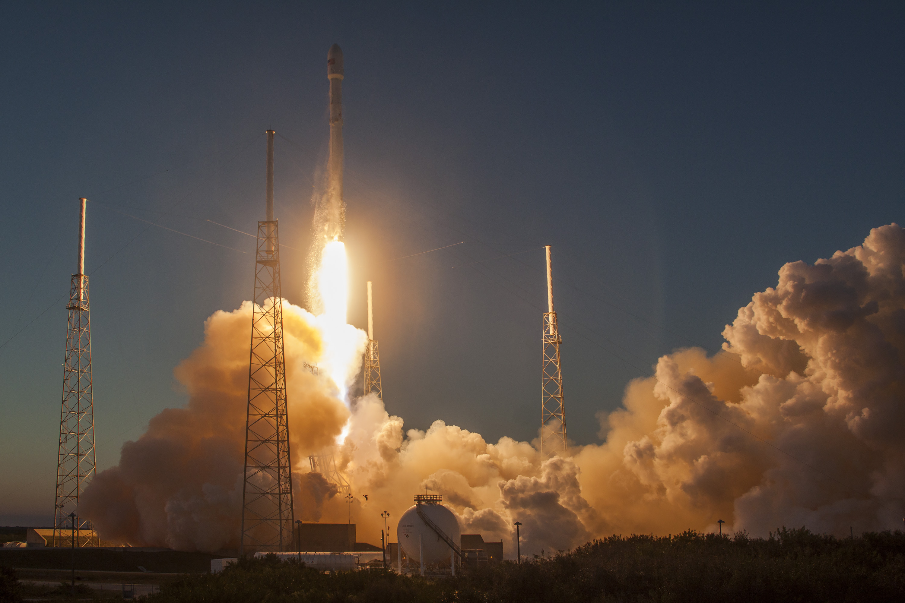
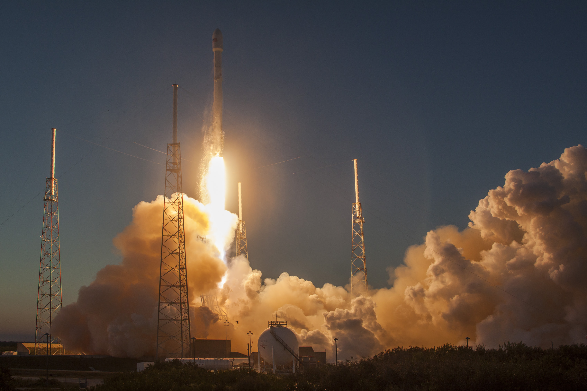

Full-thrust version and first booster landing
Falcon 9 Flight 20 historic first-stage landing at CCAFS Landing Zone 1, December 22, 2015: Falcon 9 flight 20
On December 22, 2015, SpaceX launched the highly anticipated return-to-flight mission after the loss of CRS-7, inaugurating a new Falcon 9 Full Thrust version of its flagship rocket featuring increased performance, notably thanks to subcooling of the propellants. This first mission of the upgraded vehicle launched a constellation of 11 Orbcomm-OG2 second-generation satellites. Performing a controlled-descent and landing test for the eighth time, SpaceX managed to return the first stage successfully to the Landing Zone 1 at Cape Canaveral, marking the first successful recovery of a rocket first stage that launched a payload to orbit.
 
